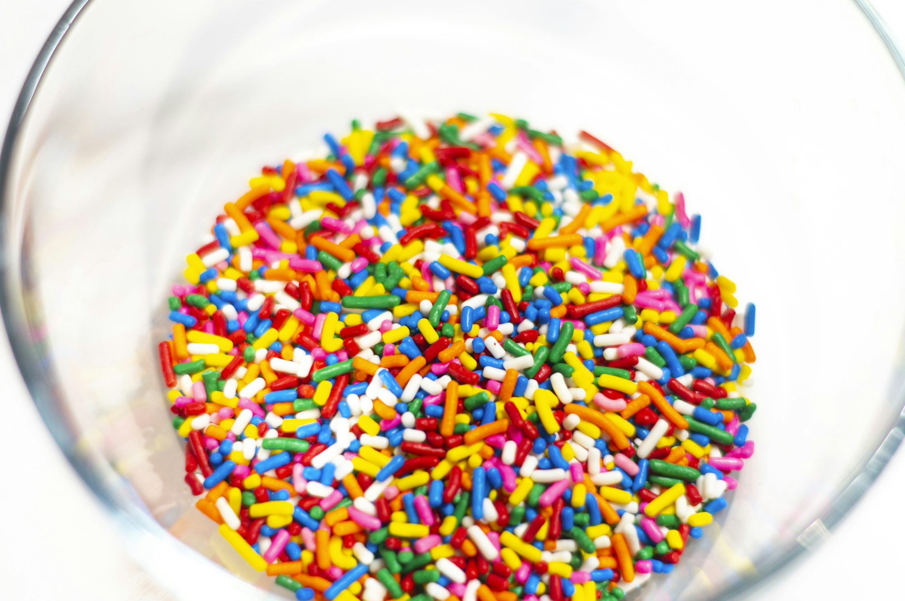

Exploring the World of Custards and Puddings: A Delightful Adventure in Texture and Flavor

A Brief History of Custards and Puddings
The origins of custards date back to ancient times, with references found in medieval European cuisine. The word "custard" is derived from the Latin word "custodia," meaning "to guard," which is believed to reference the protective casing often used to encase the creamy filling. Initially, custards were savory dishes made with eggs, milk, and various spices.
Puddings, on the other hand, have roots in both Europe and Asia, with early recipes utilizing grains or legumes as thickeners. The term "pudding" has evolved over the centuries, initially describing any type of dessert, but has come to refer to creamy, often sweet, mixtures in contemporary cuisine. The transition from savory to sweet marked a significant change, leading to the delightful varieties we enjoy today.
Types of Custards and Puddings
Custards and puddings come in many forms, each with its unique characteristics. Understanding these types can help you choose the right dessert for any occasion:
- Pastry Cream (Crème Pâtissière): A versatile custard used as a filling for pastries, éclairs, and tarts. It is thickened with cornstarch and flavored with vanilla, making it rich and smooth.
- Crème Brûlée: A luxurious custard topped with a layer of caramelized sugar. The contrast between the creamy custard and the crunchy top creates a delightful experience.
- Flan: A popular dessert in many cultures, flan is a caramel custard made with eggs and milk, often infused with vanilla. Its smooth texture and sweet caramel sauce make it a favorite.
- Bread Pudding: A comforting dessert made from stale bread soaked in a custard mixture, often enhanced with spices, fruits, or chocolate. It is a perfect way to use leftover bread, resulting in a warm and hearty dish.
- Rice Pudding: A classic dessert made from rice cooked in milk and sweetened with sugar and spices. Its creamy consistency and subtle flavors make it a comforting treat.
- Chocolate Pudding: A rich and decadent dessert made with cocoa powder or melted chocolate, combined with milk and a thickening agent. Its smooth texture and intense chocolate flavor make it a favorite among chocolate lovers.
Essential Techniques for Making Custards and Puddings
Creating the perfect custard or pudding requires attention to detail and a few essential techniques. Here are some key methods to master:
1. Tempering Eggs: When making custards, it’s crucial to temper the eggs to prevent them from scrambling. This involves slowly adding a hot liquid (like milk) to the beaten eggs while whisking continuously. This gradual heating helps the eggs incorporate smoothly without curdling.
2. Thickening Agents: Custards are typically thickened with eggs, while puddings often use cornstarch or flour. Knowing when and how to incorporate these thickening agents is essential for achieving the desired texture. For example, cornstarch should be mixed with a bit of cold milk before adding it to the hot mixture to prevent lumps.
3. Cooking Gently: Custards and puddings require gentle cooking over low to medium heat. This allows the mixture to thicken slowly without curdling. Stirring constantly ensures even cooking and a smooth texture.
4. Straining: For an ultra-smooth custard, strain the mixture through a fine sieve before cooking. This removes any lumps and ensures a silky finish.
5. Chilling: Most custards and puddings benefit from chilling after cooking. This not only enhances their flavor but also helps them set properly, resulting in a firmer texture.
Iconic Custard and Pudding Recipes
Here are a few iconic recipes to inspire your next dessert adventure:
- Classic Crème Brûlée: Combine cream, sugar, and vanilla bean in a saucepan. Heat until simmering, then temper egg yolks and sugar mixture. Bake in a water bath until set. Chill, then sprinkle sugar on top and caramelize with a torch.
- Chocolate Pudding: Whisk together sugar, cocoa powder, cornstarch, and salt in a saucepan. Gradually add milk while stirring. Cook over medium heat until thickened. Remove from heat, stir in vanilla and butter, then chill before serving.
- Rice Pudding: Cook rice in milk with sugar and a pinch of salt. Stir in vanilla and cinnamon for flavor. Serve warm or chilled, topped with raisins or nuts.
- Bread Pudding: Soak cubed bread in a mixture of eggs, milk, sugar, and spices. Bake until set and golden brown. Serve warm with a drizzle of caramel or a scoop of ice cream.
Cultural Variations
Custards and puddings vary widely across cultures, each with its unique twist:
- Japanese Purin: A creamy custard dessert topped with caramel sauce, similar to flan but lighter in texture.
- Indian Kheer: A rice pudding flavored with cardamom, garnished with nuts and raisins, often served during festivals.
- Spanish Natillas: A custard-like dessert flavored with cinnamon and vanilla, often served cold and topped with a sprinkle of cinnamon.
The Joy of Creating Custards and Puddings
Making custards and puddings is a rewarding culinary experience. The gentle process of whisking, cooking, and creating something delightful brings joy to both the cook and those who get to enjoy the results. These desserts can be dressed up for special occasions or enjoyed simply as a comforting treat at home.
As you explore the world of custards and puddings, you’ll find endless possibilities for flavors, textures, and presentations. Whether you’re experimenting with spices, fruits, or different bases, there’s a creamy dessert waiting to be discovered.
Conclusion
In conclusion, custards and puddings are not just desserts; they are a journey through history, culture, and creativity. By mastering the techniques and experimenting with flavors, anyone can create delicious, comforting desserts that bring smiles to faces. So gather your ingredients, embrace the art of custard and pudding making, and indulge in the sweet satisfaction of these delightful treats.